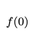

This is your first, easy project. The others will be larger and more interesting. This one will let you get started writing, formatting, compiling, running and testing simple C programs. This requires that you familiarize yourself with the Common Platform and our Coding Style Guidelines. A full list of the relevant Learning Outcomes is included at the end of this page.
This project is to be done individually. You should be able to solve these problems using the material up to the end of the Lecture 2 slides. Please don’t go find other resources for implementing your solution. Solving these problems with material from just the first two lectures should let you start on your code early, and it will give you a chance to practice using basic C features for things like I/O.
There is a starter file for this project, starter1.tgz. This file is a compressed tar archive containing several files you’ll need. You’ll need to unpack the files inside to get started. There are a couple of ways you can do this.
$ tar xzvf starter1.tgz$ curl -O https://www.csc2.ncsu.edu/courses/csc230/proj/p1/starter1.tgz
$ tar xzvf starter1.tgzIn general, when we grade your programs, we expect them to behave exactly as described in the assignment. This includes producing the right output with the right spacing and line termination. The project 1 starter includes some input files and expected output files to help you make sure your programs are behaving correctly. As described below, you can capture your program’s output in a file and then use the diff command to compare the output you got with the output we were expecting you to get. If diff sees any differences, even in spacing or line termination, it will tell you where they are. There’s a little guide linked from the course home page explaining how to use diff and how to read its output.
Using a web browser, visit github.ncsu.edu and log in with your unity credentials. If you’re not able to log in on this website, inform the instructor immediately (i.e., before the deadline).
We’ll be using NCSU’s GitHub for submitting future projects. This is an opt-in system, which means that the initial login is required so that you are recognized as a user. If you are not in the system, we won’t be able to create the repository that you will be using for the rest of the course, and you won’t be able to complete future projects.
Maybe you’ve used git and github before. That’s great, but keep in mind that you’ll need to use your assigned repo, hosted on NC State’s GitHub for future projects.
You’ll get your 10 points just for logging in on the NCSU github. This is a really easy 10 points to earn. There is nothing to turn in for this part of the assignment. If you run into trouble logging in, be sure to let us know before the deadline, so we can try to help you out.
The program, style.c is an example of some bad style. It has everything, bad or missing comments, bad curly bracket placement, some hard tabs for indentation, some incorrect line termination, no line termination at the end of the last line, maybe more problems. Edit this program to make it consistent with the class style guidelines.
The style guide requires particular types of block comments before each function and at the top of each file. After reformatting the program, add these comments. You may need to read the code for the various functions so your comments can summarize what they each do. You’ll also find some opportunities to make sure the program uses meaningfully-named constants instead of some magic numbers.
To edit the style.c source file, you can use a text editor or the IDE of your choice. Most of the style errors will be easy to see by just looking at the source file and consulting the class style guide document. Some style errors are in the whitespace of the source file (spaces or line termination). These may be more difficult to see in your editor. To check these, you may want to use the hexdump program. If you run it like the following, it will show the sequence of characters in the source file, in hexadecimal on the left and as symbols on the right. This will let you see exactly what caracters are in your source file by looking at the sequence of hexadecimal codes on the left.
$ hexdump -C style.c
00000000 23 69 6e 63 6c 75 64 65 20 3c 73 74 64 69 6f 2e |#include <stdio.|
00000010 68 3e 0a 23 69 6e 63 6c 75 64 65 20 3c 73 74 64 |h>.#include <std|
00000020 6c 69 62 2e 68 3e 0a 0a 23 64 65 66 69 6e 65 20 |lib.h>..#define |
00000030 53 45 56 45 4e 54 59 20 37 32 0a 0a 76 6f 69 64 |SEVENTY 72..void|
00000040 20 70 72 69 6e 74 57 6f 72 64 28 20 69 6e 74 20 | printWord( int |
00000050 78 20 29 0a 7b 0a 20 20 20 20 66 6f 72 20 28 20 |x ).{. for ( |
00000060 69 6e 74 20 69 20 3d 20 30 3b 20 69 20 3c 20 78 |int i = 0; i < x|
00000070 3b 20 69 2b 2b 20 29 0a 20 20 20 20 7b 0a 20 20 |; i++ ). {. |
00000080 20 20 20 20 20 20 20 20 20 20 2f 2f 20 50 72 69 | // Pri|
00000090 6e 74 20 61 20 72 61 6e 64 6f 6d 20 6c 6f 77 65 |nt a random lowe|
000000a0 72 2d 63 61 73 65 20 6c 65 74 74 65 72 2e 0a 20 |r-case letter.. |
000000b0 20 20 20 20 20 20 20 20 20 20 20 70 72 69 6e 74 | print|
000000c0 66 28 20 22 25 63 22 2c 20 39 37 20 2b 20 72 61 |f( "%c", 97 + ra|
000000d0 6e 64 28 29 20 25 20 32 36 20 29 3b 0a 20 20 20 |nd() % 26 );. |
000000e0 20 7d 0a 7d 0a 0a 69 6e 74 20 70 72 69 6e 74 4c | }.}..int printL|
000000f0 69 6e 65 28 29 20 7b 0a 09 69 6e 74 20 63 6f 75 |ine() {..int cou|
00000100 6e 74 20 3d 20 30 2c 20 70 6f 73 20 3d 20 30 2c |nt = 0, pos = 0,|
00000110 20 73 70 61 63 65 20 3d 20 30 3b 0a 09 69 6e 74 | space = 0;..int|
... more hexdump output omitted ...The example above shows the start of the hexdump output for the style.c file from the starter, before any corrections have been made. Down near the bottom, you can see a problem with the file, the characters with a hexadecimal code of 09. These are hard tab characters used for indentation in a few places. The style guide says we shouldn’t use hard tabs for indentation, so you’ll want to replace these with an appropriate number of spaces using your text editor.
There are also some places in the style.c file where Windows-style line termination is used at the end of a line. These will show up as a two-character sequence, 0d 0a, in the hexdump output. You’ll want to replace these with with Unix-style line termination, just a newline character, 0a. If you have trouble making this correction in your editor, you may want to try the dos2unix command installed on the common platform systems. It can change the type of line termination used everywhere in a text file.
When your style.c program runs (even before you correct the style), it should exit with a successful exit status and produce the following output. The starter also includes a expected-style.txt file you can use to make sure your style-corrected program produces exactly the output we’re expecting (a randomly-generated paragraph of text).
wlrb mqbhcd r owkk hiddqsc xrjm wfr sjyb dbef arcbynecd ggx pklore
nmpa qfwkho kmcoqhnw kuewhsqmgb uqcljj vsw dkqtbxi mvtrrbljpt snfwzqfj
fadrrwsof b nuvqhff saqxwpqcac hchzv rkmlno jkpqpx jxkitzyx cbhhkic
oendtomfg wdwf gpxiq kuytdlcgde htaciohor tq vwcsgspqo msb agu nny
nz gd wpbtr blnsade guumoqc rubetoky hoachwdvmx rdryxl n qtukwa mleju
wci xubume meya drmydiajxl ghiqfmz lvihjo vsuyoyp yul eim otehzri c
kpggkbb p zrzu xamludf kgruowz i oobpple lwphapjna qhdcnvwdtx bmyppp
uxnspusgd iixqmbfjxj v djsuyib ebmws q oygyxym evypzvje ebeocfu
sxdixtigsi ehkch dflilrjq nxzt rsvbspkyh enbppkqtp dbuotbbqcw vrf ju jd
tg iqvdg ijvwcya bwewpjvyg hljxepb iwuqzdzu du zv fspqp wuz f ovydd
Words: 103This program’s output depends on the random number generator. If you run it on a system that’s not a common platform machine, you may get a different sequence of random numbers, so your output may not match the expected output. Be sure to check it on a real common platform system to make sure you’re getting the output we expect. Your style corrections shouldn’t change the program behavior, but checking the output is a good way to make sure you didn’t modify the program’s behavior accidentally.
For this part of the assignment, you’ll be submitting your modified source file, style.c, to the Project 1 assignment in Moodle. Your submission will be graded according to the following:
Have a look at the textbox.c source file. This program is intended to give you a chance to try reading input character-by-character using getchar() and printing characters using putchar(). The overall skeleton of this program is done for you, but you’ll need to fill in the bodies of the functions to get it working.
The job of this program is to print text from standard input, but with a border around the text. The figure below shows how it’s supposed to work.
The border drawn around the text is a fixed-width, and made from a chosen character. It should be tall enough to contain every line read from standard input. Both the box width and the character it’s made of are specified via preprocessor constants, so it would be easy to change them and then re-compile the program. We’ll use a border that’s made of asterisks and contains lines of 60 characters (so, a lot wider than the figure above shows). This width value is the length of each line of text inside the border. With a border character at the start and end of each output line, these will actually be two characters longer. So, by default, output lines will all be 62 characters, with 60 characters in between he first and last character of the border.
Input lines may not all be exactly the right length; probably, many of them will be shorter than 60 characters or longer. We don’t know how to work with strings yet, so we’ll have to work character-by-character. As you’re reading the input and printing the output, you’ll need to count the characters on the current line. For lines that are shorter than 60 characters, you’ll need to print some extra spaces at the end, to get the output length up to 60 characters. For input lines that are too long, you’ll need to read and print the first 60 characters. After that, you’ll still need to read the rest of the characters up to the end of the line, but you won’t want to print more than the first 60 characters to the output.
Your program will define and use the following three functions. You can have more if you want, but we’ll be looking for at least these three.
void lineOfChars( char ch, int count )
This function prints out multiple copies of the given character, followed by a newline. The number of copies is determined by the count parameter. Use this function to help print the top and bottom border around the text.
bool paddedLine()
This function will read and print a single line of text inside the border. Your main function will call this over and over, once for each line of input. The function returns true or false to tell the caller if there was another input line to process. If it successfully reads (and prints) an input line, it should return true. Otherwise (i.e., it hits EOF before it can read any characters), it should return false to tell the caller that there’s no more text to put in the box. This function will read the text from standard input and print to standard output. If the line of text isn’t long enough, it will add extra spaces at the end to make the box rectangular. If a line of text is too long, it will discard extra characters on the line (i.e., up to the end-of-line) to keep the box rectangular.
We don’t know how to store strings yet, so this function will need to work by reading in and handling just one character at a time. You can do this by keeping up with how many characters you’ve read in for the current line and deciding what to do with each character as you read it. Remember, each time the paddedLine() function is called, it should read in a whole line of characters, but it may not be able to print all those characters and it may have to print some extra characters. If the line is shorter than the width of the box, it will need to print some extra characters at the end. If the line is longer than the width of the box, the function will still need to read the whole line; it just won’t print any of the characters out past the end of the box.
This function is probably the most fun/tricky part of this assignment. The test cases provided with the starter will help you try out your function’s behavior and make sure it’s doing the right thing in all situations. When printing out a line in the middle part of the text box, you can either make main() responsible for printing the border characters at the start and the end, or you can make this function handle it, whichever seems easier to you.
int main()
This is, of course, the starting point of your program. It will use the other two functions to print the text from standard input with a border around it.
Be sure to fill in the empty block comments in this program according to the style guide. Remember, a file comment has a short summary of the file/program, along with a file and an author tag. A block comment on a function needs a short summary of what the function does, along with param tags for any parameters the function takes, and return tag if it’s not a void function.
Compile your program using the following command.
You can run the program and type input to it yourself, but the output will look a lot better if you use redirection to read input from a file. If you just want to see what your program’s output looks like, you can run it like:
$ ./textbox < input-text-1.txtIf you really want to make sure your output is right, you can capture the output in file and compare it against one of our expected output examples. Try running your program as follows to tell it to read input from our first test case (input-text-1.txt) and send output to a file named output.txt. Then, check your programs exit status to make sure it reported successful execution, and use diff to help make sure it produced output that matches what we were expecting.
$ ./textbox < input-text-1.txt >| output.txt
$ echo $?
0
$ diff output.txt expected-text-1.txtYou can use similar commands to test your program against each of the four test cases we’re providing. Here’s what they each do:
This test input contains five lines, each one 60 characters long, exactly long enough to fill a line of the box. It should be easy.
This test has lines that are all shorter than the box width, so they’ll all have to be padded with extra spaces at the end to make the box the right width.
This test has some lines that are too long, so the extra characters at the end will have to be discarded as the line is processed.
This test contains a few lines of text, some that have to be padded with spaces and some (one) that has to be truncated.
Remember, you need check the exit status right after you run your program. If you get an exit status of zero and diff doesn’t report any differences between the expected output and the actual output you got, then it looks like your program is behaving correctly. If diff notices any differences, it will report the line number where there’s a discrepancy, along with the contents of the lines that don’t match. If you have trouble interpreting the output of diff, you can try out the sdiff command. This works like diff, but it will display the expected and actual output files side by side, and may make it easier to see inconsistencies between the files. To use sdiff, just replace diff with sdiff in the shell code above.
For this part of the assignment, you’ll be submitting your modified source file, textbox.c to the Project 1 assignment in Moodle. Your edits to textbox.c will be graded according to the following:
C has a math library, containing functions for things like square roots, logarithms and trigonometry. We’ll learn about this library soon. For this part of the project, we’ll try out a way to compute the trigonometric functions yourself, without using the math library.
Our program will be called trig.c. When run, it will read an angle, x, from the user as a double value. Then, it will print out a table of successively more accurate approximations of the sine of x, the cosine of x and the tangent of x. The following shows a sample execution of our program. The first line shows the user running the program at the shell prompt. Then, the user enters 1.75 as the input angle. Then, the program prints out a table giving better and better approximations. It stops when the result seems accurate enough. For this example, it takes 14 iterations.
$ ./trig
1.75
terms | sin | cos | tan
------+-------------+-------------+-------------
1 | 0.0000000 | 1.0000000 | 0.0000000
2 | 1.7500000 | 1.0000000 | 1.7500000
3 | 1.7500000 | -0.5312500 | -3.2941176
4 | 0.8567708 | -0.5312500 | -1.6127451
5 | 0.8567708 | -0.1404622 | -6.0996524
6 | 0.9935465 | -0.1404622 | -7.0734067
7 | 0.9935465 | -0.1803552 | -5.5088336
8 | 0.9835733 | -0.1803552 | -5.4535359
9 | 0.9835733 | -0.1781735 | -5.5203117
10 | 0.9839975 | -0.1781735 | -5.5226925
11 | 0.9839975 | -0.1782477 | -5.5203924
12 | 0.9839857 | -0.1782477 | -5.5203262
13 | 0.9839857 | -0.1782460 | -5.5203795
14 | 0.9839860 | -0.1782460 | -5.5203808
Our program expects the user to enter an angle in radians as input. It doesn’t print out a prompt; the user is just expected to know what to do after they run the program. If the user enters a value that can’t be parsed as a double, or if they enter something larger than π or smaller than -π, the program will print a line with the following error message (printed to the terminal, standard output) and then exit with an exit status of 1.
Invalid inputOur program will use the Taylor series to compute our approximation of sine and cosine. You probably remember the Taylor series from calculus class. It lets us compute the value of a function at any point, x, as long as we know the value of the function at a nearby point a and we know first, second, third, … derivatives of the function at a. There’s a wikipedia page if you’d like a more detailed reminder.
The following shows the Taylor series for a point, x, based on the value and derivatives of f() at some nearby point, a. The first term of the series is just the value of f() at a. The next term is the derivative of f() at a times (x - a) divided by one factorial. Successive terms are similar. They use successive derivatives of f() (i.e., the second derivative, the third derivative and so on), they use successive powers of (x - a) and they use successive factorials in the denominator.
We can simplify the Taylor series a little bit if we use zero for a. The following shows the series after this simplification. This is how we’ll use the Taylor series for this program.
If we use the notation f(i)( 0 ) to represent the ith derivative of f(), then we can write the Taylor series using summation. To compute an approximation, we’ll just use the first few terms in this infinite series.

This series works out very nicely when we’re using it to compute sine and cosine. The table below shows the value of sin(a) at a = 0 and its successive derivatives. The value of sin( 0 ) is zero. You may remember that the first derivative of sin() is the cosine function, so the first derivative of sin(a) at a = 0 is 1 (that’s the value of cos( 0 ) ). The second derivative of sin() is -sin(), so the value of the second derivative of sin(a) at a = 0 is 0. The third derivative of sin() is -cos(), so the value of the third derivative of sin(a) at a = 0 is -1. The fourth derivative of sin() is just sin(), so the derivatives of sin() form a cycle that goes like: sin() → cos() → -sin() → -cos() → sin()
| derivative of f() | for f(a) = sin(a) | value at a = 0 |
|---|---|---|
| f(a) | sin(a) | 0 |
| f(1)(a) | cos(a) | 1 |
| f(2)(a) | -sin(a) | 0 |
| f(3)(a) | -cos(a) | -1 |
| f(4)(a) | sin(a) | 0 |
| f(5)(a) | cos(a) | 1 |
If we fill in these values to get the taylor series for sin(), we get the following. You can see that half the terms have a coefficient of zero. They don’t affect the result, but we’ll still count them when we’re reporting the number of terms used to get the current approximation (see below).
To compute the Taylor series for cosine, you can think about the value of cosine at zero and what the derivatives of cos() evaluate to. You’ll come up with a series that’s similar to the one above, but with zero, one and negative one coefficients on different terms.
The value of tan( x ) should be equal to sin( x ) / cos( x ). So, whenever we update the approximation for sine or cosine, we can compute a new, more accurate approximation for tangent.
As shown above, the program’s output table has four columns, with a header at the top. Columns are separated by a vertical bar, with a space on either side of every bar. The first column is an integer, printed in a 5-column field. The rest of the values are all real numbers, printed in an 11-character field and rounded to 7 fractional digits. Each row of the table gives an approximation of the sine, cosine and tangent for the input angle based on the Taylor series.
The first column reports the number of terms used in the Taylor series approximation. Each line of the table uses an additional term, to give us successively more accurate approximations. For terms, we’ll count every term in the taylor series, even the ones with coefficients of zero. So, for example, a Taylor series with just one term would look like:

A series with four terms would look like:

The trig.c program should print out lines of the table until it gets values for sine and cosine that appear to be accurate enough. It will check this by comparing the new values for sine and cosine with the previous values. If each of these differ by no more than 0.000001 (that’s 10-6) from their previous values, then the program can stop after the current row.
In the example output above, the last two values of sine differ by about 0.0000003 (that’s 3 * 10-7) and the last two estimates for cosine differ by zero, so the program stopped after 14 rows.
The starter contains a partial implementation for the trig.c program. You get to fill in the functions and create meaningful named constants to make the program easy to understand and modify. You’ll define and use the following five functions. You can have more if you want.
double getAngle()
This function reads the angle input from the user and returns it. It should check to make sure the user enters a valid real number for the input and that the value is in the right range. If not, it should print the “Invalid input” error message and exit the program unsuccessfully.
double difference( double a, double b )
This function returns the positive difference between a and b. It is used to tell when the current estimate of sine and cosine is accurate enough.
void tableHeader()
Print the two header lines at the top of the table.
void tableRow( int terms, double s, double c, double t )
Print a row of the table, reporting the number of terms used for the Taylor series approximation (terms), the current value of sine (s), cosine (c) and tangent (t).
int main()
This is the starting point for running your program. It will use the other four functions to read user input and to help write out the output table.
Be sure to fill in the block comments for the source file and the bodies of the functions you get to write. For preprocessor constants you define, be sure to give a short Javadoc-style comment that says what they’re for.
You should be able to compile your program using the following gcc command:
This program is easy to run with input entered by the user. While you’re developing and debugging, you may just want to type in an input value yourself and watch how the program behaves. Once you think it’s running correctly, you can start comparing the output against expected output for our provided test cases. You can use commands like the following. Here, we’re running the program on test input 1 for the trig program and sending its output to a file named output.txt. Immediately after it finishes, we check the exit status. For test input 1, it should exit successfully, and it does here. Then, we compare the output with the expected output to make sure there are no differences.
$ ./trig < input-trig-1.txt >| output.txt
$ echo $?
0
$ diff output.txt expected-trig-1.txtFor the trig program, a couple of the tests are invalid inputs. For these, the program isn’t expected to exit successfully, and it should print an error message. Below, we’re showing how to test against one of these invalid test cases. First, we run the program with test input 4 and send its output to a file named output.txt. After that, we check the exit status. For this test, it should exit with a status of 1, and it does. Then, we check if the program’s output (an error message) matches the expected output.
$ ./trig < input-trig-4.txt >| output.txt
$ echo $?
1
$ diff output.txt expected-trig-4.txtWe’re providing five test cases to try your program with, each with an input file and an expected output file. They provide different values for the input angle, including two with invalid user input.
This test uses an input angle of 1.0
This test uses an input angle of 3.1415. This is a valid angle, but it will require more terms to converge to an estimate that’s accurate enough.
This test uses an input angle of -0.5. This test should converge more quickly.
This test gives an invalid input. It’s a legal real number but it’s out of range for the program.
This test gives an invalid input. It’s not even a valid real number input.
For this part of the assignment, you’ll be submitting your modified source file, trig.c to the Project 1 assignment in Moodle. We’ll grade it using the same criteria as the textbox.c program:
Of course, before you submit, you’ll want to be sure both of your programs are consistent with the CSC 230 Style Guidelines. Also, make sure they compile cleanly (no errors or warnings) on a common platform machine using the required compiler options.
There is a 24 hour window for late submissions. You’ll be permitted to submit your assignment up to 24 hours past the due date, but it will cost you a 20 percent deduction if you submit your assignment late.
While developing, if a program enters an infinite loop, use Ctrl+C to stop it.
Make sure you submit source files (ending in .c), not your executable programs.
Make sure you’ve submitted all of your files in the Moodle assignment for Project 1. After submitting, you can go back and check to make sure your files are all there.
Contact the teaching staff if you run into a problem submitting your work. Or, visit Piazza and see if someone else has run into the same kind of problem.
The syllabus lists a number of learning outcomes for this course. This assignment is intended to support several of theses:
Write small to medium C programs having several separately-compiled modules
Explain what happens to a program during preprocessing, lexical analysis, parsing, code generation, code optimization, linking, and execution, and identify errors that occur during each phase. In particular, they will be able to describe the differences in this process between C and Java.
Correctly identify error messages and warnings from the preprocessor, compiler, and linker, and avoid them.
Find and eliminate runtime errors using a combination of logic, language understanding, trace printout, and gdb or a similar command-line debugger.
Interpret and explain data types, conversions between data types, and the possibility of overflow and underflow
Explain, inspect, and implement programs using structures such as enumerated types, unions, and constants and arithmetic, logical, relational, assignment, and bitwise operators.
Trace and reason about variables and their scope in a single function, across multiple functions, and across multiple modules.
Write, debug, and modify programs using library utilities, including, but not limited to assert, the math library, the string library, random number generation, variable number of parameters, standard I/O, and file I/O
Use simple command-line tools to design, document, debug, and maintain their programs.
Distinguish key elements of the syntax (what’s legal), semantics (what does it do), and pragmatics (how is it used) of a programming language.